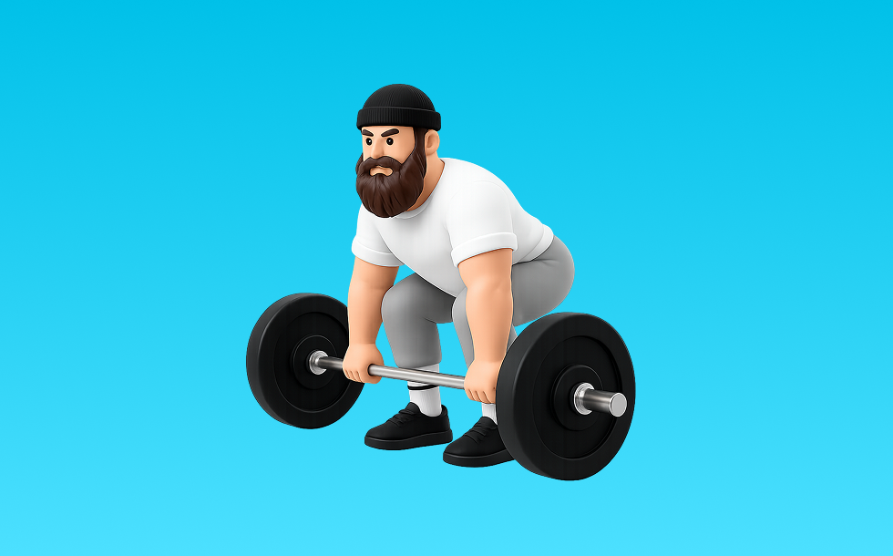

デッドリフト

デッドリフトとは、バーベルを使って「股関節で持ち上げる」動作で臀筋、ハムストリング、脊柱起立筋を鍛える種目です。高重量を扱いやすく、筋力を伸ばしやすいのが特徴で、背すじを保ち、股関節で持ち上げてゆっくり下ろす動作を繰り返します。下半身の筋力・筋量アップが期待できます。
- 対象部位
- 脚
- 器具
- バーベル
- 記録形式
- 重量・回数
- 別名
- デッド / conventional deadlift
YouTube動画
-
【デッドリフト】絶対に効く正しいやり方を解説致します。広背筋・僧帽筋そして脚に聞かせるテクニックありです。
-
そのデッドリフト間違ってます。デットリフトの正しいやり方はこれです。
-
【初心者向け】デッドリフトのやり方｜効果的なフォームの解説
-
【それNGです】デッドリフト：4つのエラー動作と改善方法
-
【初心者】デッドリフトの一番簡単なやり方 | ボディビルチャンピオンが解説【ビーレジェンド プロテイン】
-
【知らないと危険】デッドリフトで怪我しないためのポイントと適切なフォームを実演解説!!
-
【筋トレ】デッドリフトのわかりやすい解説、決定版！
-
【腰を痛める方が多い…】デッドリフトの正しいやり方と注意点を実演解説!!
-
【デッドリフトフォーム】初心者が陥りがちな間違い！
-
【デッドリフト】2024版‼︎日本記録保持者に習う正しいフォーム！
-
【実演解説】効果絶大なデッドリフトを徹底解説！
-
【初心者】正しいデッドリフト講座【筋トレ】
-
10分で貴方のデッドリフトを爆上げさせます。
-
【初心者は絶対に見るべき】デッドリフトで腰がぶっ壊れる7つの大間違い
-
【デッドリフト】危険！やってはいけないフォーム！
-
デッドリフトの種類とそれぞれのフォーム・どこに効くか・効果を解説。怪我予防のためのセットの組み方も。
-
2分で分かるダンベルデットリフトのやり方
-
【背中トレ】そのデッドリフトは間違っている！？絶対に背中に効くようになるデッドリフトのポイントとは？【筋トレ】
-
【デッドリフト】腰を痛めたくない人に多いフォームミスの例と改善方法
-
【デッドリフト】99%重量が伸びる肩甲骨の使い方！
-
筋トレ初心者に絶対見てほしいデッドリフトの全て
YouTubeショート
-
鬼の背中トレ🔥 デッドリフトのやり方 #筋トレ #背中トレ #デッドリフト #マッチョ #筋肉社長
-
正しいデッドリフトのやり方
-
デッドリフトは正しく・丁寧に‼︎ #筋トレあるある #デッドリフト#筋トレ初心者 #背中トレ
-
持田選手に2種類のデッドリフトについてレクチャーしていてもらいました！次はどの種目の解説をやってほしいかコメントしてね！#筋トレ #volix #トレーニング #ちょこっと惜しい
-
プロに聞く！デッドリフトで腰を痛めない方法！
-
デッドリフト100キロフォームこれで良いでしょうか？#100キロ #筋トレ #デッドリフト
-
デッドリフトこれだけでOK
-
こんなデッドリフトはやめましょう #フィットネス #筋トレ
-
【筋トレ2か月目】デッドリフト100kg上がったんですけど、これくらいの腰がちょっと曲がっちゃうのはいいの？ #ジム #筋トレ #デッドリフト #フォーム改善
-
【ダンベルを使ったデッドリフトの正しいやり方】筋トレ三巨頭！ その一角を極めよ！｜Training Movie 100｜Tarzan Web
-
【30秒】デッドリフトがマジで上手くなる練習方法#shorts
-
デットリフトは筋肥大にいいですか？ #デットリフト #筋肥大 #サム切り抜き #samgetitright #筋トレ #フィットネス #ボディビル #ジム #筋肉 #ジョージ #メンズコーチ #兄弟
-
ワイドデッド入門編
-
デッドリフトが伸びる３つのポイント！フォーム解説！
-
デッドリフトの正しいやり方#shorts
-
正しいルーマニアンデッドリフト4つのポイント #筋トレ
-
デッドリフトは痩せたい人も、腰を強くしたい人も絶対やるべき！ チャンネル登録をお願いします！ #筋トレ #ダイエット #腰痛
-
【デッドリフト】腰を痛める3つの間違い #パーソナルトレーナー #筋トレ #デッドリフト
-
体に擦りつけて引くデッドリフト #フォーム解説 #ボディメイク #筋トレ
-
【比較】ルーマニアンデッドリフトVSデッドリフト #セミパーソナルジム #トレーニング #くびれ
-
【ダンベル】ルーマニアンデッドリフトの特徴とフォーム解説
-
【初心者さん必見】デッドリフトの正しいやり方 #筋トレ #フォーム解説
-
腰が痛くならないデッドリフトの方法4選！
-
持田選手にダンベルでできるデッドリフトについてレクチャーしていてもらいました！次はどの種目の解説をやってほしいかコメントしてね！
-
デッドリフトの準備方法#ジム #初心者 #デッドリフト
-
ワイドデッドリフトの正しいやり方！フォーム解説！
-
【トレーニング】初心者でもできる！デッドリフトの正しいやり方｜女性にもわかりやすく解説
-
ハーフデットリフトのコツ
動作方法
- 背中を中立に保ち、股関節から動き始める
- もも裏の張りを感じる位置まで下ろす
- 足裏で床を押して立ち上がる
動作ポイント
- 背中を丸めない
- 膝を伸ばしきらない
- バーや重りを体から離しすぎない
ワンポイントアドバイス
- ウォームアップで股関節と足首を動かす
- 高重量の日はセーフティ設定を確認する
目的別回数設定
目的や体力に応じた一般的な目安です。無理のない範囲で調整してください。
- 筋力アップ
- 1〜5回
- 筋肥大
- 6〜12回
- 持久力アップ
- 13〜20回
YouTube動画について
動画はYouTubeの公開情報をもとに表示しています。内容は投稿者によるもので、Biggrによる監修ではありません。
アプリを入手
筋トレやトレーニングの記録はBiggrにお任せください。今すぐ無料で使い始められます。